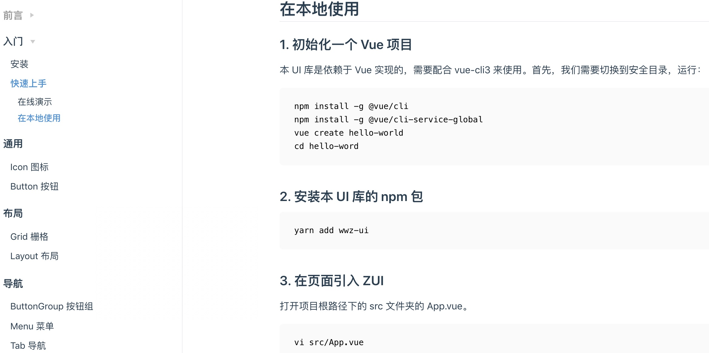
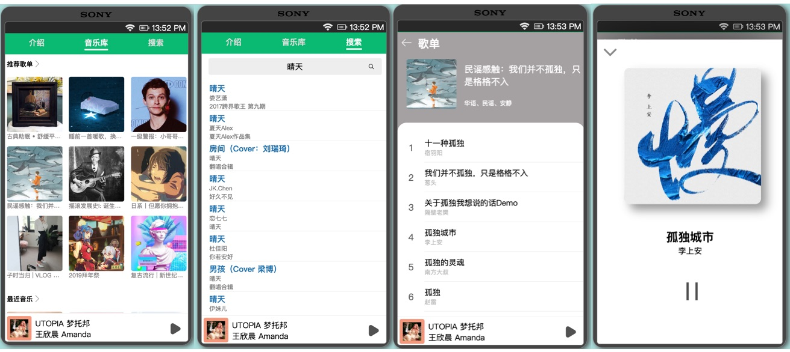

项目经历
唯演会
2018/08-2018/10
- 项目介绍： 为用户提供账户信息管理、主持人/礼仪小姐/各类演绎资源/活动设备租赁等服务需求信息的 App。
-
主要职责：
- 借助 APICloud 这个工具进行混合开发，前端框架使用了 KnockOut（类似于 Vue）
- 负责整个项目的登录、订单管理模块，在此过程中完成了对 Ajax 和常用方法的封装
- 个人总结： 通过对一些常用代码的封装，提高了我的开发的效率；通过写登录模块的代码，让我熟悉整个登录流程；通过负责订单模块，让我和后端同事的配合更好了；整个项目做下来，让我进一步掌握调试的技巧。
房司仪
2018/12-2019/02
- 项目介绍： 一款为厦门本地以及周边地区提供买房和卖房服务的小程序。
-
主要职责：
- 负责整个登录流程
- 编写首页、房源详情、个人中心等页面
- 封装小程序的 Ajax 和通用方法
- 定制百度编辑器以供后台使用
- 个人总结： 这是我第二次做小程序项目，吸取第一次的教训，我第一天进行了一些必要的配置，首先，我把数据请求和业务逻辑分成了两个部分。并且，根据业务的需求封装了两个组件（Img, Tabbar）；由于这次的登录业务比较复杂，我遇到了一些 Bug，这次的经历让我以后能更好处理相关的逻辑。
个人作品
ZUI

- 项目介绍： 这是一款使用 Vue 构建的组件库，借鉴了主流框架如 Ant Design、Element UI 等的设计理念，实现了十几个常用的组件。简洁好用是它的设计理念。
- 项目预览： 预览 | 源码
- 技术栈： Vue.js/Vue Cli3/VuePress/ES6/CSS 3/NPM/Mocha/SCSS/TravisCI/
- 个人总结 此项目耗时 3 个月，通过这三个月的实践，我使用到了 Vue 的绝大多数知识，现已较为熟练的掌握 Vue。 本项目完全使用 Vue Cli3 构建，在此过程中我熟悉了前端工程化的工作流程。通过撰写文档和自己使用的过程中，让我意识到了写完代码才只是第一步，API 设计和清楚的逻辑表达是也很关键。同时我也熟悉了发布 NPM 包的方法，为以后做开源软件打下基础。 在做项目的过程中我受到了很多人的帮助， 这让我充分的意识到了开源文化是一件多么美好的事情。
音乐播放器

关于我
我的优点
喜欢编程，喜欢分享，擅长排难，常浏览技术博客
熟悉常用的布局，能 完美还原设计稿
熟悉 HTML 的语义化，了解网页和小程序的 Canvas，较为熟悉 CSS 和 Vue 的动画
熟悉 Vue 的常用功能，了解 Vue全家桶，可以 快速上手 Vue 相关的项目
了解 TypeScript 和 React，能进行一些简单的开发
了解 Http 和 Node.js 的相关知识，可以构建简单的服务器
熟悉 Vim，Git，Sass 等常用的工具
我的介绍
我于 2018.7 月毕业于厦门集美大学，专业为 「信息与计算科学」，主要学习数学和计算机的知识。 大学期间我曾获得过多次将学金。
大四上学期接触前端，大四下学期去公司实习，毕业后入职该公司（厦门软云科技有限公司），担任前端开发的工作，接近一年大概做了 4-5 个项目， 网页、后台、小程序、APP 都有涉及。